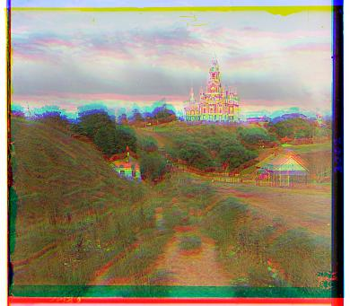
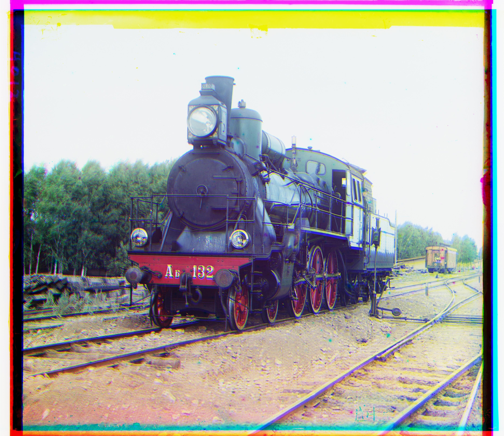

Abstract
Using the collection of glass plate photographs from the Library of Congress’ Prokudin-Gorskii collection, we can use image processing techniques to produce a single color image from 3 different color channel images. To create the complete color image, we must first align all of the separate color channels in space. This alignment is needed because the original images were taken from slightly different positions, so just stacking the 3 color channels yields an image that is not properly aligned as shown below.
To properly create the full color image, we need to do some preprocessing before stacking the images. More specifically, we need to align the images such that the features in the image are aligned. There are two initial techniques used for this: Exhaustive Search, and Image Pyramids. We will begin with Exhaustive Search which is the simple, but inefficient technique.

|

|
Exhaustive Search
The Algorithm
The general concept of exhaustive search is that we will compare 2 images at a time. One image is kept static, while the other one
is shifted around right, left, up, and down. The amount of shift that is done is user-defined, and in this case I chose to move over a
range of [-15, 15]. As each different shift, a similarity score is calculated. The score can be any metric, but
in this project we explore 2 different methods: Sum of Squared Differences (SSD), and Normalized Cross Correlation (NCC). Using these scores,
the best shift is found. We keep one of the color channels static, and align the other 2 channels to that channel. Once the best alignments are
found, the images can be stacked.
When calculating scoring metrics, we look for values that represent similarity between pixels in some way. To do this, we need to make sure that there aren't image artifacts that could cause inconsistencies in the score. One such artifact is the borders on the image. Even if you align the images, the borders are not perfectly aligned because of slightly different framing. To avoid this, we slightly crop the image before running exhaustive search to eliminate the borders.
Scoring Metric - Sum of Squared Differences (SSD)
SSD gives us a value that represents how different the pixels between two images are, in other words, the pixel variation.
The formula used for this method is sum((image1 - image2)^2). With this scoring method, a sum of 0
indicates that the two images are exactly the same, so we aim to minimize the score.
Scoring Metric - Normalised Cross Correlation (NCC)
NCC gives us a value that represents how correlated the pixels between two images are. The formula for this method is
sum(image1/|image1| * image2/|image2|). With this scoring method, a higher value means that the pixels are more correlated
so we aim to maximize the score.
Results

Green Shift: [5,2] Red Shift: [12, 3] |

Green Shift: [-3, 2] Red Shift: [3, 2] |

Green Shift: [3, 3] Red Shift: [7, 3] |

Green Shift: [5,2] Red Shift: [12, 3] |

Green Shift: [-3, 2] Red Shift: [3, 2] |

Green Shift: [3, 3] Red Shift: [7, 3] |
As can be seen in the resulting images, SSD and NCC produce more or less indistinguishable results so both metrics are valid for this problem.
Image Pyramid
The Algorithm
Although exhaustive search works fine on small images of size 64x64, it becomes quite expensive to run on larger images. Searching through an comparing the values of every single pixel takes too long so a more clever method needs to be devised. To do this, we use image pyramids. An image pyramid leverages the fact that for larger objects in an image, the object will still be visible if we decrease the resolution of the image. We can therefore run the alignment algorithm on a smaller version of the image, and then update that alignment as we scale the image resolution up.
We implement the image pyramid recursively by scaling the image down by a factor of 2 until we reach a size that is comparable to our original jpg images (64x64).
Once we have this smaller image, we can align the images and find the optimal_shift. That optimal_shift becomes the new alignment that we
will use. We the go back up to the next highest layer in the recursion, keeping track of what that value. We shift the image by that shift value, and then re-align the images once again.
This alignment can be done on a small portion of the image so that we don't search through all the pixels exhaustively. We then find out what the new shift value is
and continue onwards until we reach the highest level. We then have our final optimal_shift and can align the color channels as we did before.
Both scoring methods discussed in the prior section are viable for the Image Pyramid algorithm. We will be using NCC arbitrarily.
Results
|
Green Shift: [20, 0] Red Shift: [56, -4] |
Green Shift: [36, 12] Red Shift: [92, 12] |
Green Shift: [56, 12] Red Shift: [116, 12] |
|
Green Shift: [40, 16] Red Shift: [88, 20] |
Green Shift: [44, 4] Red Shift: [92, 8] |
Green Shift: [68, 7] Red Shift: [156, 12] |
|
Green Shift: [44, 24] Red Shift: [100, 28] |

Green Shift: [28, 4] Red Shift: [68, 28] |
Green Shift: [68, 24] Red Shift: [156, 32] |
|
Green Shift: [28, -11] Red Shift: [92, -27] |
Green Shift: [36, 22] Red Shift: [-28, 12] |
Notice that Emir and Sculpture are not perfectly aligned. This will be fixed later on when we explore the Sobel Edge Detection Algorithm.
My Selected Images
Below are some examples of the algorithm run on selected images from the photo collection
|
Green Shift: [68, -40] Red Shift: [100, -64] |
Green Shift: [48, -5] Red Shift: [84, -24] |
Green Shift: [28, 12] Red Shift: [68, 28] |
|
Green Shift: [48, 16] Red Shift: [92, 32] |
Green Shift: [4, 4] Red Shift: [60, 12] |
Green Shift: [36, -16] Red Shift: [92, -29] |
Bells and Whistles - Alignment Through Edge Detection
Notice that in the images "Sculpture" and "Emir", the color channels still do not line up very well. This can be a result of the scoring metrics, and the effect of the color filters on the image. Another way we can align these color channels is to use a very similar technique as before, but to run the image pyramid algorithm on a filtered verion of the original image that only sees edges. This algorithm will let us align the details in the image without looking at the pixel intensities or shading. To do this, we need to create our own implementation of a Sobel Filter, which is a filter that results in just the edges in the image.
The Sobel edge detection algorithm utilizes two masks. A vertical line mask and a horizontal line mask. The masks are as such:
|
|
By convolving each mask with the original image, we can create two new images -- one that has the horizontal edges, and one that has the vertical edges. To get the final output of one image with all the edges, we simply combine the two images together as follows:
|
|
In this formula, G_x is the image with vertical edges, and G_y is the image with horizontal edges. Once the images are combined, we are left with one image that outlines all
the edges in the original image. We can then move on to use this image in our usual image pyramid alignment algorithm to find the optimal shift. An example of the edges detected
is shown below on the Emir image.

|
|
Now we only have the lines outlining the details on the image. We can then run our alignment algorithm on just these edges, and it will be able to tell if the shapes in the image match up regardless of the colors or intensity of the pixel values.
Results with Edge Detection
|
|
|
|
|
|
It can clearly be seen that aligning based on the edges for these particular images greatly improved the final results of the composite image.
Bells and Whistles - Border Cropping
Notice that many of the images still have borders left over due to the shifting that happened during alignment. We can fix these artifacts by implementing a cropping algorithm. To crop the images, we can search for horizontal and vertical edges. We start from each edge of the image (left, right, top, bottom), and for each side respectively, we shift a mask over until we find a line. Once a line is found, the amount of shift is recorded, and the image can then be cropped to that line.
Examples are shown below of cropped images.
|
|
|
|
|
|
|
|
|
|
|
|
Notice that some images still have slight borders left over. The cropping algorithm can be re-run on these images to find the next closest border to crop off, but this adjustment needs to be done on a case by case basis as some of the images look fine after one round of cropping. Overall, the cropping is not 100% perfect but does remove most of the borders from the images as shown.
Bells and Whistles - White Balance Adjustment
Some of the images have a tint that is not the natural shade of the image. We can adjust the color by following the Grey World model. We can force average color of scene to grey by computing the mean color over the entire image, and scaling the average color to be grey. The adjusted images are shown below.
|
|
|
|
|
|
|
|
|
References
- http://www.adeveloperdiary.com/data-science/computer-vision/how-to-implement-sobel-edge-detection-using-python-from-scratch/
- https://coderspacket.com/sobel-edge-detection-from-scratch-using-python